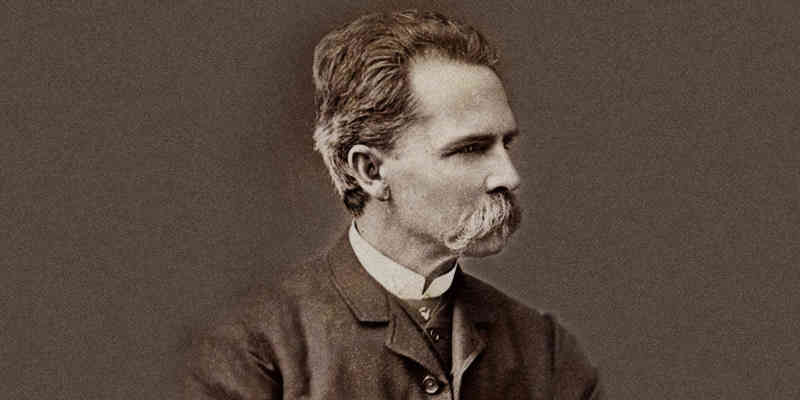

Jorge Ricardo Isaacs Ferrer fue un novelista, escritor y poeta colombiano del género romántico.
Jorge Isaacs:
- 1837: Nació en Santiago de Cali el día 1 de abril. Su padre era George Henry Isaacs, un judío ingles oriundo de Jamaica.
- 1837 – 1848: Existe poca información sobre su infancia, con base en su poesía se sabe que el Valle del Cauca era su espacio idílico durante este tiempo. Estudio en Cali y luego en Popayán.
- 1848 – 1852: Estudió en Bogotá durante el gobierno de José Hilario López.
- 1852: Regreso a Cali.
- 1854: Luchó en las campañas de Cauca contra la dictadura del general José María Melo, por 7 meses. Su familia atravesó por una difícil situación económica a causa de la guerra civil.
- 1856: Se casó con Felisa González Umaña, quien contaba por entonces diecinueve años, y que le daría abundante descendencia y perseverancia.
- 1859 – 1860: Escribió sus primeros poemas y emprendió la escritura de varios dramas históricos.
- 1860: Tomó de nuevo las armas para combatir al general Tomás Cipriano de Mosquera, que se había levantado contra el gobierno central, y combatió en la batalla de Manizales.
- 1861: Murió su padre; terminada la guerra, Isaacs regresó a Cali para encargarse de los negocios paternos, llenos de deudas. Tuvo que desprenderse de las haciendas "La Rita" y "La Manuelita".
- 1864: Supervisó los trabajos del camino de herradura entre Buenaventura y Cali. Durante este año comenzó a escribir su novela María. En esta época, así mismo, debido a lo insalubre del clima, contrajo paludismo.
- 1870: Fue nombrado cónsul general en Chile.
- 1876: Intervino de nuevo en las luchas políticas, en las que tomó de nuevo las armas.
- 1879: Fue expulsado de la Cámara de Representantes, a raíz de un incidente en que Isaacs, ante una sublevación conservadora, se proclamó jefe político y militar de Antioquia. Debido a esto tomó la decisión de retirarse de la política.
- 1895: Murió el 17 de abril a causa del paludismo en Ibagué, donde pasó sus últimos años de vida.